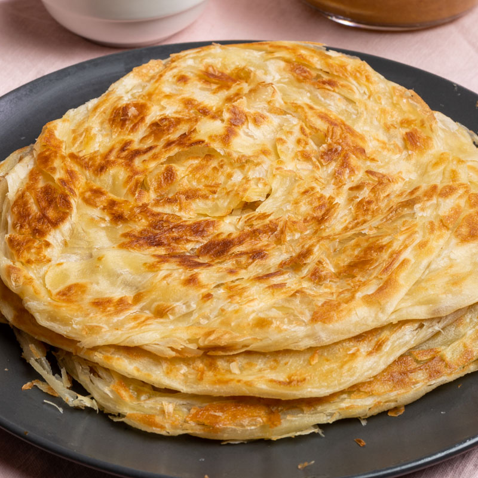

Roti Canai

Recipes
Roti canai is a popular Malaysian flatbread that has gained international acclaim for its deliciously flaky texture
and versatility. Made from a simple dough of flour, water, eggs, and ghee (clarified butter), the dough is
repeatedly folded and flattened to create its characteristic layers. It is then cooked on a hot griddle until golden
and crispy on the outside while remaining soft and chewy on the inside. This delightful bread is often enjoyed with
a side of dhal (lentil curry), chicken curry, or even sugar for a sweet treat.
The preparation of roti canai is a skillful art that showcases the cook’s dexterity and technique. Street vendors
and restaurants alike take pride in the theatrical display of stretching, flipping, and twirling the dough before it
hits the griddle. Roti canai is not just a meal but a cultural experience, often enjoyed during breakfast or as a
snack throughout the day. Its adaptability also means it can be stuffed with various fillings such as eggs, onions,
or meats, making it a favorite among locals and visitors looking to savor an authentic taste of Malaysia.
Ingredients
- 2 cups all-purpose flour
- 1/2 teaspoon salt
- 1 tablespoon sugar
- 1/4 cup ghee (clarified butter) or oil
- 1/2 cup water
- 1/4 cup evaporated milk
- 1 egg
- Extra ghee or oil for cooking
Steps
- In a large bowl, mix the flour, salt, and sugar.
- Add the ghee (or oil) and rub it into the flour mixture until it resembles coarse crumbs.
- In a separate bowl, combine the water, evaporated milk, and egg. Gradually add this liquid mixture to the flour
mixture, stirring until a soft dough forms.
- Knead the dough on a lightly floured surface for about 5-10 minutes, or until it becomes smooth and elastic.
- Divide the dough into small balls (about 8-10). Grease each ball with a little ghee or oil and place them on a
tray, covering with a damp cloth. Allow them to rest for at least 2 hours or overnight for best results.
- After resting, flatten each dough ball on a lightly oiled surface using your hands or a rolling pin, stretching
and spreading the dough as thinly as possible.
- Heat a griddle or non-stick pan over medium heat and brush with a little ghee or oil.
- Cook each flattened dough on the griddle until it is golden brown and crispy on both sides, about 2-3 minutes
per side.
- Repeat with the remaining dough, adding more ghee or oil to the griddle as needed.
- Serve the roti canai warm with curry, dhal, or your favorite side dish.